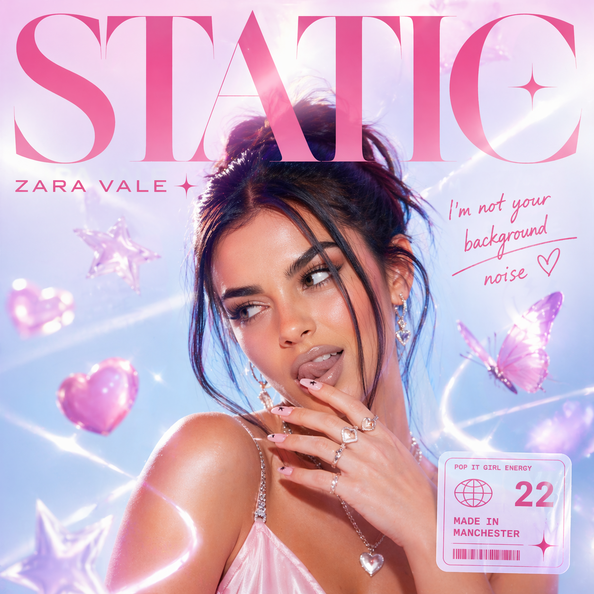

★ Mock Campaign — Portfolio Case Study ★
A TikTok-first pop campaign built to turn an unknown into everyone's favorite obsession — in 30 days.

01 / Concept
The Artist: Zara Vale, 22, from Manchester. Genre-blending dancey pop with a sharp tongue and even sharper choreography. Think Charli XCX's charisma meets Dua Lipa's production sensibility — but grittier, funnier, and more self-aware.
The Single: "STATIC" — an anthemic breakup bop about refusing to be background noise in someone else's story. The hook is built for a TikTok sound.
Campaign Big Idea: "The Anti-Wallflower." Every piece of content positions Zara as someone who refuses to fade into the background — visually bold, sonically loud, personality-first.
02 / Content Plan
Every week has a distinct energy — building from intrigue to obsession.
Week 01 — Teaser Phase
Zara uploads on her social media channels. Just 3-second clips of Zara dancing in a strobe-lit room to a distorted snippet of "STATIC." Caption is a single word: soon. Comment section becomes a guessing game. Algorithm reward: saves and shares spike.
Week 02 — Artist Reveal
Zara appears. First video: her getting ready, styling herself, looking directly into the camera and mouthing "I'm not your background." Filmed on a phone for organic video look. Release date caption goes live. "STATIC" snippet plays in full for the first time.
Week 03 — Drop + Dance Challenge
Single drops. Zara posts the official dance — a 15-second, learnable choreography designed for replication. 10 micro-creators (50k–500k followers) pre-seeded with the sound post same day. The algorithm sees volume spike on Day 1 and pushes it.
Week 04 — Sustain + Personality
Behind-the-scenes content. Spoofs from shoots and dance practice videos. Funny, self-aware videos reacting to her own song going viral. "Day in my life" vlog-style posts. Pinned comment strategy: Zara personally replies to 10 comments per day to drive engagement.
Week 05 — Press + Playlist Push
Editorial pitch: target rising pop and new pop music playlists on Spotify, Apple Music and YouTube Music. PR push to online music blogs. TikTok live performance of STATIC. Collaborations with other artists with STATIC as the background music.
Week 06 — Longtail
Tease next single. Fan poll on next music video concept. "Making of STATIC" mini-doc posted in three parts. Email list captured through link-in-bio for early access to next drop. End of campaign: measure virality index and pivot for EP rollout.
03 / AI in the Campaign
Used to generate all hook scripts, caption variants, press release drafts, and audience persona profiles. Ran 10 caption A/B variants per post to find the highest-tension opening line.
Generated the mood board, cover art concepts, and promotional imagery in Zara's visual language: high contrast, Y2K-adjacent, bold typography, strobe aesthetic.
Prototyped the instrumental hook structure of "STATIC" before going into a real studio session — used as a pitch reference to get buy-in from the label and producer.
Auto-clipped Zara's long-form making-of footage into 20+ short-form TikTok and Reels assets. AI identified the highest-engagement moments automatically.
04 / How It Was Built
This campaign was built solo, from zero — no agency, no budget, no team. Every asset you've seen above was produced using a deliberate AI workflow: strategy first, tools second, human judgment throughout. Here's exactly how it came together, stage by stage.
Stage 01 — Foundation
Before touching any creative tool, the work started with a brief. Who is Zara Vale? What does she sound like, look like, stand for? I used Claude to stress-test the character — asking for audience personas, cultural references, and platform behaviors — iterating until the brief felt genuinely specific rather than generic. A vague brief produces vague campaigns. Getting this stage right made everything downstream faster and more consistent.
Stage 02 — Concept
With the brief locked, I used Claude to generate five distinct campaign concept directions — each with a name, a one-line idea, and a TikTok content hook. The goal wasn't to take the first good answer. It was to have enough options to make a real creative choice. "The Anti-Wallflower" was direction #3. I rejected two stronger-sounding concepts because they were harder to execute in short-form video. Practicality is a creative decision.
Stage 03 — Sound
A music campaign needs a sound. Before writing a single caption, I prototyped "STATIC" using Suno AI — iterating on the instrumental hook until it matched the campaign's energy: high-tempo, distorted synth, built for a 15-second TikTok loop. The chorus preview you heard at the top of this page was generated from a single prompt, then selected from 6 variations. It serves as a sonic reference point for everything else — the visual palette, the copy tone, the campaign pacing.
Stage 04 — Visual Identity
With the concept and sound locked, visual direction came next. I used ChatGPT's image generation to develop a mood board and cover art — high contrast, Y2K-adjacent, bold typography, strobe aesthetic. The goal was a distinctive visual language that could scale across TikTok thumbnails, Instagram posts, and streaming art without losing coherence. The artwork you see on this page was selected from 12 generated variations, then used as the anchor for all other visual decisions.
Stage 05 — Content & Copy
With strategy, sound, and visual identity set, execution became systematic. I used Claude to build the 6-week TikTok content calendar — generating post types, hook scripts, and caption variants for each week's distinct energy. For every post, I ran at least 5 caption variants and selected based on tension in the opening line. All copy was reviewed and edited by hand before going into the final page. AI writes fast; a human decides what survives.
Stage 06 — Production
The final stage was turning the campaign into the page you're reading now — a fully designed, deployed microsite that presents the work as a living artifact rather than a slide deck. Built in HTML/CSS/JS with Claude, deployed via Netlify from a GitHub repo. The design system (typography, color, motion) was derived from the campaign assets rather than imposed on them. The audio player, scroll animations, and custom cursor were all built from scratch to match the campaign's energy.
Honest reflections
AI is fastest at volume and variation. The real skill isn't prompting — it's knowing which output to kill. Out of roughly 40 concept directions generated, exactly one was worth building. Judgment is the human layer that makes AI useful.
Prompt quality compounds downstream. The audience personas I wrote in Stage 01 directly improved every output that followed. A precise brief produces precise outputs. Garbage in, garbage out holds even with frontier models.
Sequence matters more than tools. Using the right tools in the wrong order produces incoherent work. Sound before visual. Concept before copy. Strategy before execution. The workflow is the product, not the individual outputs.
In a real campaign, creator seeding happens earlier. Identifying and warming up micro-creators should start in Week 1, not Week 3 — giving them time to genuinely connect with the sound before the drop rather than receiving it as a briefed task.
Every stage documented here can be replicated for any artist, any genre, any market. The tools change; the logic doesn't. Brief → concept → sound → visual → content → production is a transferable framework for AI-assisted campaign work — applicable to music, brand launches, product campaigns, and editorial content operations at scale.
See the full numbers: cost, time & output breakdown →05 / AI-Generated Copy Samples
I spent a year being quiet.
Blending in. Turning down. Making myself smaller.
STATIC is me deciding I'm done with that.
It's loud. It's a little chaotic. It sounds like the moment you stop caring what anyone thinks.
Out now. Link in bio. I hope it makes you dance stupidly in your kitchen at midnight. That's what it does for me.
🎵 STATIC — out everywhere now
#zaravale #static #newmusic #pop
FOR IMMEDIATE RELEASE
Manchester-born artist Zara Vale announces her debut single "STATIC," a high-voltage pop anthem arriving April 18, 2026. Produced by LVRN Studio, "STATIC" announces Vale as one of UK pop's most compelling new voices — one who weaponizes dancefloor energy and breakneck lyricism to carve out space that's entirely her own.
The single is accompanied by a TikTok-first campaign designed to put the song — and the choreography — in front of 5 million users within its first 30 days.
Hey [Name]! 👋
I'm Zara — I make music and I'm about to drop my debut single STATIC on April 18. I've been watching your content for a while and honestly your energy is exactly the vibe I made this song for.
Would love to send you an early listen + the official dance tutorial before it drops — no obligations, just thought you might actually dig it. 🎶
lmk! — Z
Zara Vale makes pop music for people who are done being background characters.
Growing up in Manchester, she spent years writing songs in her bedroom and performing to crowds of exactly zero. Now 22, she's decided that was enough rehearsal.
Her debut single "STATIC" arrives April 2026. It sounds like the moment you decide to stop apologizing for taking up space.
06 / Success Metrics